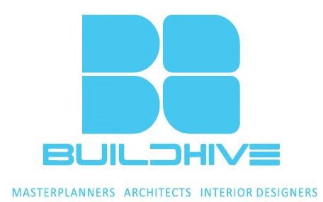

Cadence BuildHive concept study
A twisted, faceted glass office tower studied across weather and light — overcast, twilight, rain and a day-lit hourglass base. A concept visualization in design development; no location or area is fixed.

Projects · The full catalogue
Towers, workplaces and homes, drawn and delivered by one firm across seven cities — from a city block to a corner office. The full set, with every interior shown in full.
A twisted, faceted glass office tower studied across weather and light — overcast, twilight, rain and a day-lit hourglass base. A concept visualization in design development; no location or area is fixed.
A green-clad residential tower rising from a perforated-brick podium in parkland — designed for the densest envelope Mumbai permits, yet read at the scale of a city block. Renders are design-stage visualizations, not photographs of built work.
A built hill-station bungalow — a lit three-storey facade behind a perforated-metal screen, a double-height living room inside, and a rooftop terrace over the hills. Designed and delivered as built work.
A parametric lattice pavilion studied top-down, at eye level and lit at night — a concept study exploring a freeform structural skin at a civic scale.
A terraced glass office tower with stepped cantilevers and a lit ground-floor lobby — shown at dusk. A design-stage concept.
A built workplace fit-out — a symmetric open office under a hexagonal ceiling feature, a curved-desk reception, a colourful breakout lounge and glass-partitioned floors. Delivered in 90 days.
A built auction-house workplace — a double-height open office under a circular ceiling feature with a mezzanine and stair, a branded reception on herringbone floors, and a line-art boardroom. Delivered in 90 days.
A built 20,000 sqft workplace — a training room framed by symmetric geometric wood-panel walls, a branded open office with a gold-trim glass railing, and bright glass-walled meeting rooms. Delivered in 90 days.
A built residence — a chandelier-lit living room over a marble floor with a mountain view, a formal dining room and a marble-waterfall kitchen looking out over the city.
A built apartment — a living room with mustard sofas, a green glass partition and a slatted TV wall; a bedroom behind a bold floral feature wall; and a dark-grey modular kitchen under copper pendants.